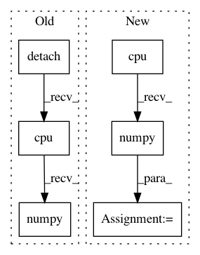

685bf12edbaf20d969dc28549e634c9fa4993f5f,dl/callbacks.py,IOUCallback,on_batch_end,#IOUCallback#Any#,98
Before Change
valid_msks = state.input[self.input_key]
iou = get_iou_vector(valid_msks.detach().cpu().numpy(),
msk_vpreds.sigmoid().detach().cpu().numpy())
key = "iou"
state.batch_metrics[key] = iou
After Change
valid_msks = state.input[self.input_key]
// msk_vpreds = msk_vpreds.sigmoid()
msk_vpreds = msk_vpreds.detach().cpu().numpy()
valid_msks = valid_msks.detach().cpu().numpy()
iou = get_iou_vector(valid_msks, msk_vpreds)
key = "iou"
state.batch_metrics[key] = iou
In pattern: SUPERPATTERN
Frequency: 3
Non-data size: 6
Instances
Project Name: Scitator/catalyst
Commit Name: 685bf12edbaf20d969dc28549e634c9fa4993f5f
Time: 2018-10-14
Author: ngxbac.dt@gmail.com
File Name: dl/callbacks.py
Class Name: IOUCallback
Method Name: on_batch_end
Project Name: AIRLab-POLIMI/mushroom
Commit Name: e304d4ee794a4cca8c116e52f99077ee71f87af1
Time: 2018-09-03
Author: carloderamo@gmail.com
File Name: mushroom/approximators/parametric/pytorch_network.py
Class Name: PyTorchApproximator
Method Name: predict
Project Name: open-mmlab/mmdetection
Commit Name: e421e832883241bd7831bf77dc31d5fb31d7da58
Time: 2019-04-06
Author: chenkaidev@gmail.com
File Name: mmdet/ops/nms/nms_wrapper.py
Class Name:
Method Name: nms